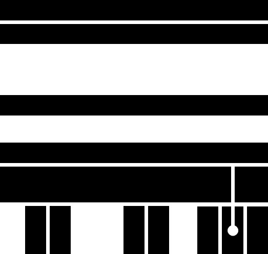

I am Junqi Deng. I got my PhD degree in computer engineering at The University of Hong Kong. I design computer systems for music applications. Here is my CV and its Chinese version.
Deng, J., Kwok, Y. K., Large Vocabulary Automatic Chord Estimation Using Bidirectional Long Short-Term Memory Recurrent Neural Network with Even Chance Training, Journal of New Music Research (JNMR), Volume 47, Issue 1, 2018
Deng, J., Kwok, Y. K., Large Vocabulary Automatic Chord Estimation Using Deep Neural Nets: Design Framework, System Variations and Limitations, arXiv preprint arXiv:1709.07153.
Deng, J., Kwok, Y. K., Large Vocabulary Automatic Chord Estimation with an Even Chance Training Scheme, In Proceedings of the 18th International Society for Music Information Retrieval Conference, Suzhou, China, 2017 (ISMIR 2017)
Deng, J., Large Vocabulary Automatic Chord Estimation from Audio Using Deep Learning Approaches. PhD thesis, Department of Electrical and Electronic Engineering, The University of Hong Kong, 2016
Deng, J., Kwok, Y. K., A Hybrid Gaussian-HMM and Deep Learning Approach For SeventhsBass Automatic Chord Estimation, In Proceedings of the 17th International Society for Music Information Retrieval Conference, New York City, USA, 2016 (ISMIR 2016) (Oral)
Deng, J., Kwok, Y. K., Automatic Chord Estimation on SeventhsBass Chord Vocabulary Using Deep Neural Network, In Proceedings of the 41st International Conference on Acoustics, Speech, and Signal Processing, Shanghai, China, 2016 (ICASSP 2016)
Hu, X., Deng, J., ..., Kwok, Y. K., SAfeDJ: A crowd-cloud codesign approach to situation-aware music delivery for drivers, ACM Transactions on Multimedia Computing, Communications, and Applications (TOMM), 2015
Deng, J., Lau, F. C. M., Kwok, Y. K., ArmKeyBoard: A Mobile Keyboard Instrument Based on Chord-Scale System and Tonal Hierarchy, In Proceedings of 40th International Computer Music Conference, Athens, Greece, 2014 (ICMC 2014) (Oral)
Deng, J., Lau, F. C. M., Ng, H. C., Kwok, Y. K., Chen, H. K., Liu, Y. H., WIJAM: A Mobile Collaborative Improvisation Platform under Master-Players Paradigm, In Proceedings of the 2014 International Conference on New Interfaces for Musical Expression, London, UK, 2014 (NIME 2014)
I love songwriting and music and production. Here are my works and more works.